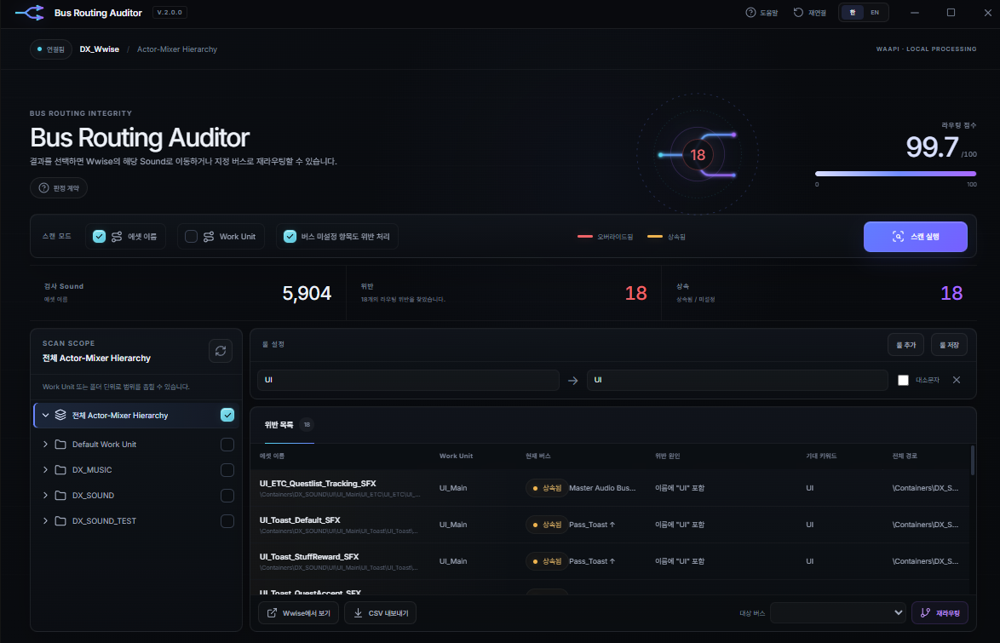

버스 라우팅을 한 번에 점검하고
흐름으로 추적
엉뚱한 버스에 걸린 사운드는 믹스를 다 잡은 뒤에야 티가 납니다. 프로젝트를 한 번 훑어 이름과 Work Unit 경로가 말해 주는 버스와 다른 것만 골라내고, 어디서 어긋났는지까지 짚어 줍니다.

이름과 Work Unit으로 예상 버스를 정한다
키워드 규칙이 에셋 이름을 버스에 대응시키고(UI → UI, AMB → AMB, VO → VO), Work Unit 경로가 범위를 더 좁힙니다. 상속된 라우팅과 재정의된 라우팅을 함께 봅니다.
읽기만 한다
WAAPI로 열려 있는 프로젝트를 읽어 점검할 뿐 아무것도 바꾸지 않습니다. 수정은 Wwise에서 직접 판단합니다.
프로젝트 전체를 한 번에
선택 항목이 아니라 모든 Sound 오브젝트를 스캔합니다. 프로젝트 구석의 라우팅 실수도 드러납니다.
결과는 CSV로
판정 결과를 내보내 넘기거나, 나중 실행 결과와 비교할 수 있습니다.
한눈에 보는 기능
이 툴이 하는 일 아홉 가지입니다. 각각은 아래에서 더 자세히 풀어 두었습니다.
전체 스캔
프로젝트의 모든 Sound 오브젝트를 WAAPI로 한 번에 읽습니다.
키워드 규칙
UI → UI, AMB → AMB, VO → VO. 에셋 이름이 있어야 할 버스를 가리킵니다.
Work Unit 경로
사운드가 프로젝트 어디에 있는지가 이름만으로는 알 수 없는 예상 버스를 좁혀 줍니다.
상속과 재정의
부모에서 상속된 라우팅과 사운드에서 재정의한 라우팅을 구분합니다. 잘못되는 방식이 다릅니다.
Signal Flow
위반을 고르면 결정 지점이 순서대로 보입니다. 사운드 → 컨테이너 → Work Unit → 현재 버스 → 기대 버스.
버스 히트맵
모든 버스를 계층 순서로 펼치고, 직접 라우팅된 사운드 중 위반 비율을 색으로 표시합니다.
세 단계 임계
15% 미만은 주의, 15~35%는 점검 필요, 35% 이상은 즉시 확인.
CSV 내보내기
판정 결과를 파일로 내보내 넘기거나 나중 실행과 비교합니다.
Wwise 안에서 실행
Command Add-on으로 설치되어 Tools 메뉴에서 열립니다. 따로 앱을 띄울 필요가 없습니다.
위반은 값 하나가 아니라
경로의 문제다
사운드가 잘못된 버스에 놓이는 것은 경로 어딘가의 결정 때문입니다. 자기 재정의일 수도, 컨테이너일 수도, Work Unit일 수도 있습니다. Signal Flow는 그 사슬을 펼쳐 어디를 고쳐야 하는지 보여 줍니다.
목록에서 사슬로
위반 목록이 입구이고, 한 줄을 고르면 그 사슬이 열립니다. 두 화면은 별개의 도구가 아니라 같은 흐름입니다.
깨끗한 것도 결과다
위반이 없는 버스는 빈칸이 아니라 clean으로 표시됩니다. 통과한 것이 통과로 읽힙니다.
위반 밀도를 한눈에
버스를 계층 순서로 펼치고, 각 버스에 직접 라우팅된 사운드 중 위반 비율을 보여 줍니다. 아래 수치는 화면이 어떤 형태인지 보이기 위한 예시입니다.
Wwise Tools 메뉴에서 바로 실행
네 단계입니다. WAAPI는 Project > User Preferences > Enable Wwise Authoring API 에서 먼저 켜 주세요.
- 01
저장소 받기
git clone또는 GitHub의 Download ZIP으로 내려받습니다. - 02
패키지 설치
install.bat을 실행해 가상환경과waapi-client를 준비합니다. - 03
Wwise Add-on 등록
install_addon.bat을 실행하면 Wwise Commands Add-on JSON이 생성됩니다. - 04
툴 실행
Wwise를 재시작하거나 Command Add-ons를 Reload한 뒤 Tools 메뉴에서 실행합니다.